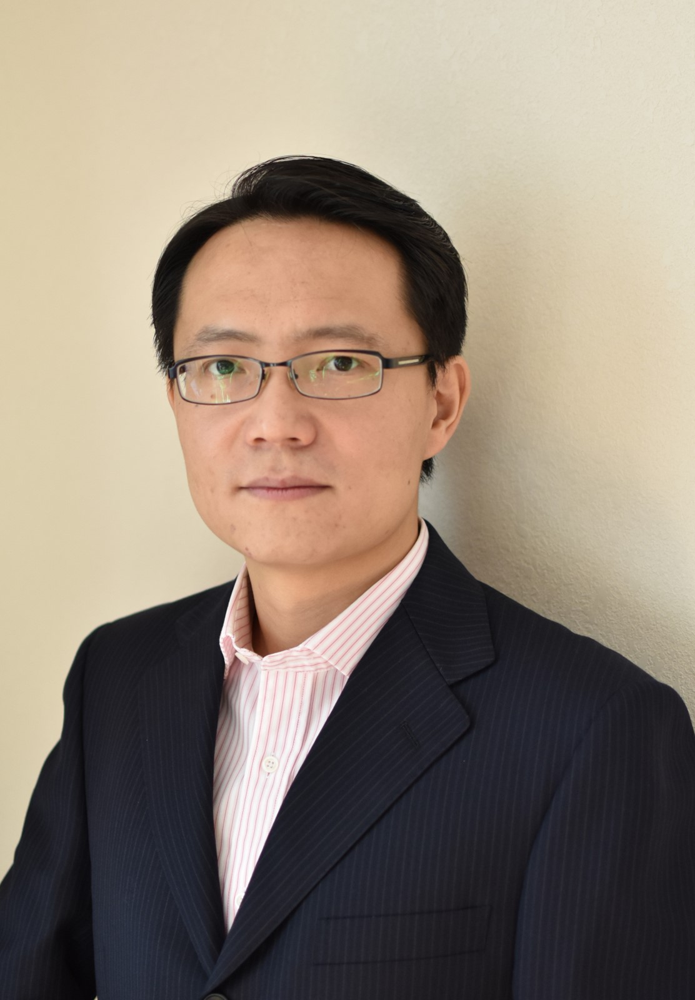

|  |
Kaige Yan, Ph.D. Associate Professor College of Communication Engineering Jilin University 5732 Nanhu Street Changchun, Jilin, China, 130012 Email: yankaige AT jlu.edu.cn 中文主页 |
| Education | ||
| PhD. in Electrical Engineering | University of Houston | 2016 |
| Work Experience | ||
| Associate Professor | Jilin University, Changchun, Jilin | 2017.09 - now |
| CPU Design Engineer | ARM Inc., Austin, Texas | 2016.09 - 2017.09 |
| Research Interests |
|
Computer Architecture, VLSI, Edge Computing, Deep Learning Processors I am part of ETECA Lab. Mre information about my research can be found there. |
| Selected Publications |
| 2021 |
| 1. Tiancong Bu, Kaige Yan, and Jingweijia Tan. Towards Fine-Grained Online Adaptive Approximation Control for Dense SLAM on Embedded GPUs. ACM Transactions on Design Automation of Electronic Systems (TODAES), 27(2), Article 11, 2021. |
| 2. Ben Li, Jingweijia Tan, Kaige Yan. AERO: Towards Energy-Efficient Autonomous Flight in MAVs Using Approximate Execution. 32nd IEEE International Conference on Application-specific Systems, Architectures and Processors (ASAP), 2021. |
| 2020 |
| 1. Kaige Yan, Jingweijia Tan, Longjun Liu, Xingyao Zhang, Stanko R. Brankovic, Jinghong Chen, Xin Fu, Toward Customized Hybrid Fuel-Cell and Battery-powered Mobile Device for Individual Users. ACM Transaction on Embedded Computer System (TECS), 18(6): 123:1-123:20, 2020. |
| 2. Jingweijia Tan, Kaige Yan, Shuaiwen Leon Song, Xin Fu, Energy-Efficient GPU L2 Cache Design Using Instruction-Level Data Locality Similarity. ACM Transactions on Design Automation of Electronic Systems (TODAES), 25(6): 52:1-52:18, 2020. |
| 3. Liqi Ping, Jingweijia Tan, Kaige Yan. SERN: Modeling and Analyzing the Soft Error Reliability of Convolutional Neural Networks. ACM Great Lakes Symposium on VLSI (GLSVLSI), 2020. |
| 2019 |
| 1. Maodi Ma, Jingweijia Tan, Xiaohui Wei and Kaige Yan. Process Variation Mitigation on Convolutional Neural Network Accelerator Architecture, 2019 IEEE International Conference on Computer Design (ICCD), Nov, 2019. |
| 2. Kaige Yan, Jingweijia Tan, Xin Fu, Improving energy efficiency of mobile devices by characterizing and exploring user behaviors, Journal of Systems Architecture (JSA), Volume 98, 2019, Pages 126-134, ISSN 1383-7621. |
| 3. Kaige Yan, Jingweijia Tan, Xin Fu, Bridging mobile device configuration to the user experience under budget constraint, Pervasive and Mobile Computing (PMC), Volume 58, Aug 2019, 101023. |
| 4. Jingweijia Tan, Kaige Yan, Shuaiwen Leon Song and Xin Fu, LoSCache: Leveraging Locality Similarity to Build Energy-Efficient GPU L2 Cache. Design, Automation and Test in Europe Conference & Exhibition (DATE), March 2019. |
| 5. Jingweijia Tan and Kaige Yan, Efficiently Managing the Impact of Hardware Variability on GPUs' Streaming Processors, ACM Transactions on Design Automation of Electronic Systems (TODAES), 24(1), Jan 2019, No. 12. |
| 2018 |
| 1. Jingweijia Tan and Kaige Yan, "HVSM: Hardware-Variability Aware Streaming Processors' Management Policy in GPUs", Design, Automation and Test in Europe Conference & Exhibition (DATE), March 2018. （Best Paper Nomination) |
| 2017 |
| 1. Kaige Yan, Lu Peng, Mingsong Chen, Xin Fu, "Exploring Energy-Efficient Cache Design in Emerging Mobile Platforms", ACM Transactions onDesign Automation of Electronic Systems (TODAES), 22(4), July 2017. |
| 2016 |
| 1. Jingweijia Tan, Shuaiwen Leon Song, Kaige Yan, Xin Fu, Andres Marquez, Darren J. Kerbyson, "Combating the Reliability Challenge of GPU Register File at Low Supply Voltage", International Conference on Parallel Architectures and Compilation Techniques (PACT), September 2016. |
| 2. Kaige Yan, Xingyao Zhang, Jingweijia Tan, Xin Fu, "Redefining QoS and customizing the power management policy to satisfy individual mobile users". International Symposium on Microarchitecture (MICRO), October 2016. |
| 2015 |
| 1. Kaige Yan, Xingyao Zhang, Xin Fu, "Characterizing, modeling, and improving the QoE of mobile devices with low battery level", International Symposium on Microarchitecture (MICRO), December 2015. |
| 2. Kaige Yan, Xin Fu, "Energy-efficient cache design in emerging mobile platforms: the implications and optimizations", Design, Automation and Test in Europe Conference & Exhibition (DATE), March 2015. |
| Teaching | |||
| CPU Principle and Design | Undergraduate | College of Electronic Science and Engineering, Jilin University | 2022 Spring |
| Programmable Logic Devices | Undergraduate | College of Communication Engineering, Jilin University | 2021 Fall |
| Computer based Control Devices | Undergraduate | College of Communication Engineering, Jilin University | 2021 Fall, 2021 Spring, 2020 Spring, 2019 Fall, 2018 Spring |
| Seminar for Freshman | Undergraduate | College of Communication Engineering, Jilin University | 2021 Fall, 2019 Fall, 2018 Fall |
| C Programming | Undergraduate | College of Communication Engineering, Jilin University | 2021 Spring, 2020 Spring, 2019 Fall, 2018 Fall |
| Computer Architecture | Graduate | College of Communication Engineering, Jilin University | 2021 Spring |